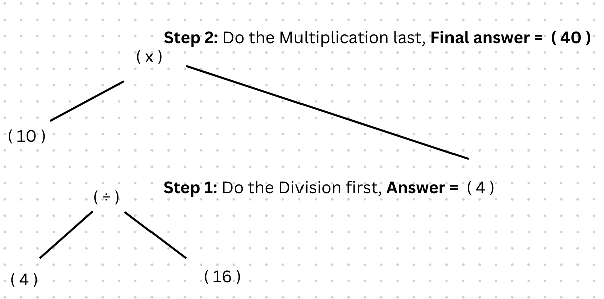
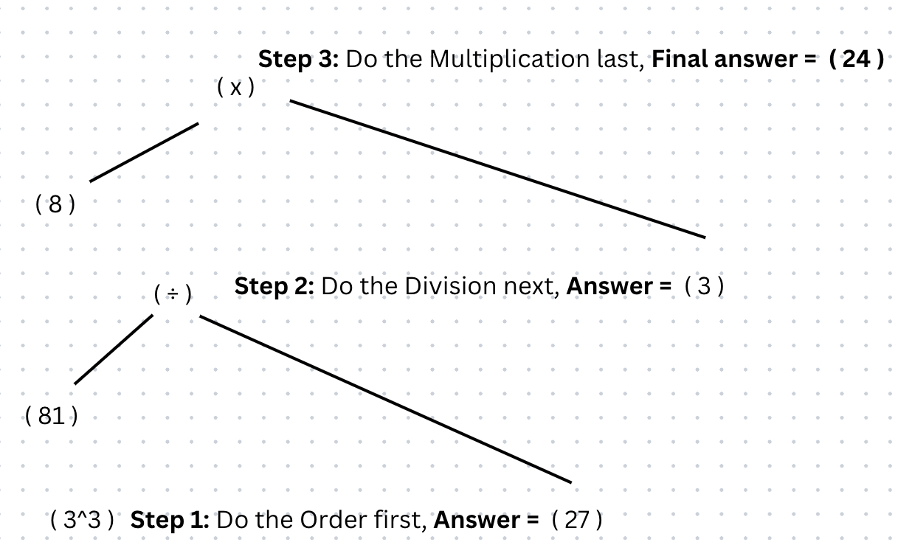
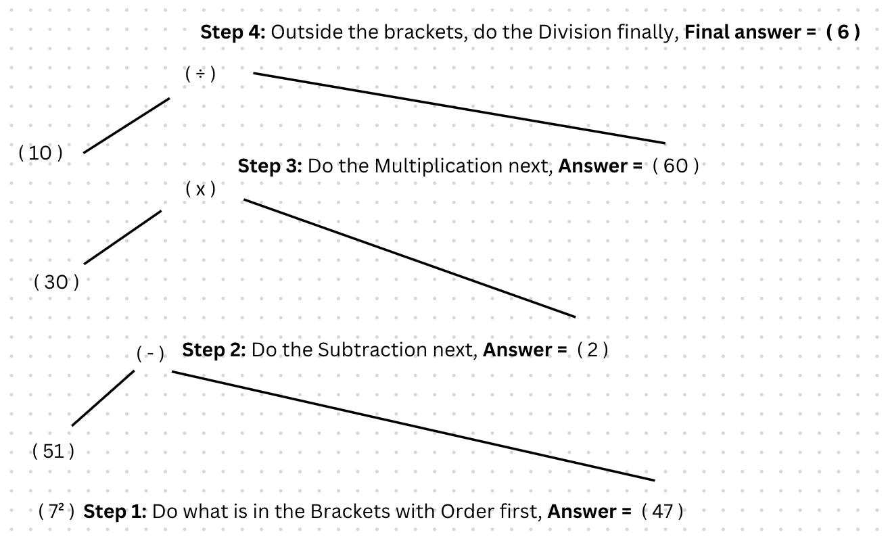

Multiplication is the 4th operator in the BODMAS rule.
Any multiplications are done after anything in brackets, orders and divisions are done first.
Multiplication has the mathematical operation of 'x'.
Remember the order in which you work through a calculation is according to ORDER OF IMPORTANCE.
Below are some examples of BODMAS questions using multiplication to give you an idea:
Below are some step by step examples of BODMAS questions using multiplication and where you might go wrong:
Answer = 40
Potential mistake: You may end up calculating 10 x 16 first as you may know to work from left to right for equations but, in BODMAS you work based on the order of importance, therefore you must do calculate the division, then you finally multify.
Here is a further step by step breakdown for you to understand:
Answer = 24
Potential mistake: You may end up calculating 8 x 81 first as you may know to work from left to right for equations but, in BODMAS you work based on the order of importance, therefore you must calculate the order, then you divide and finally multify.
Here is a further step by step breakdown for you to understand:
Answer = 6
Potential mistake: You may end up calculating 30 x 51 in the brackets first as you may know to work from left to right for equations but, in BODMAS you work based on the order of importance, therefore you must do calculate what is in the brackets first which is the order, then you subtract and multify. Then finally outside the brackets you divide.
Here is a further step by step breakdown for you to understand:
Have a go at the questions below: